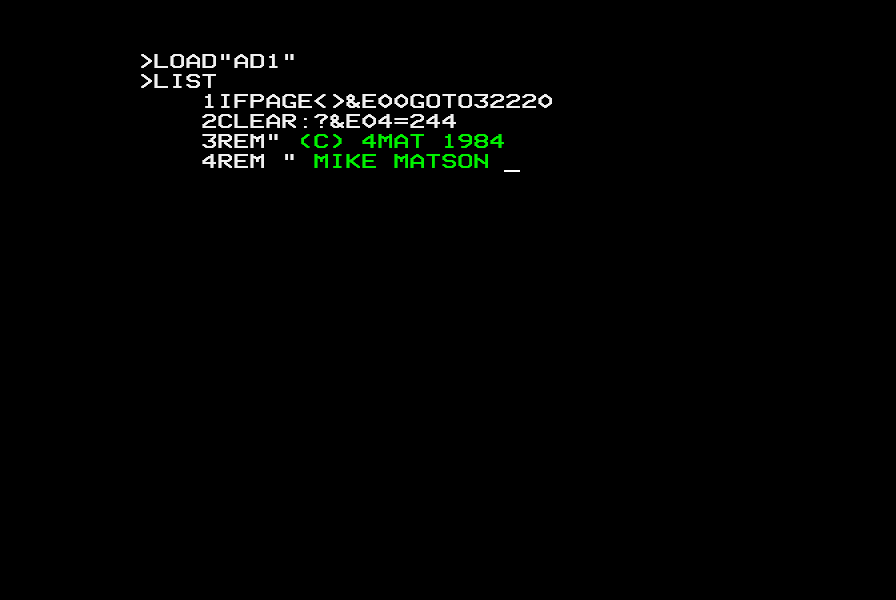
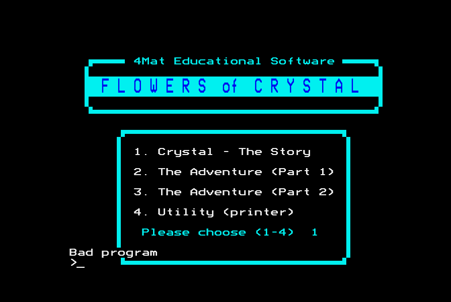
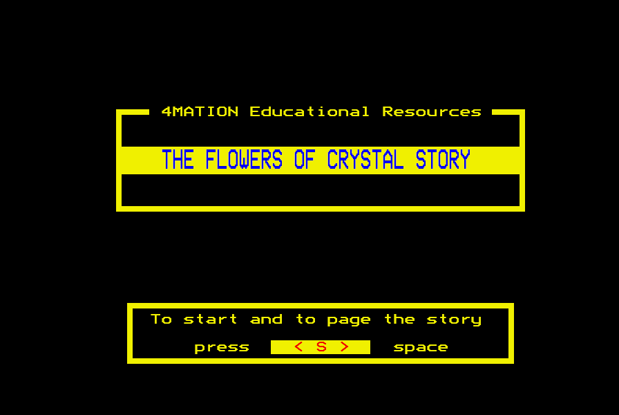

<meta charset="utf-8">
<meta name="viewport" content="width=device-width, initial-scale=1">
<title>Flowers of Crystal</title>
<link rel="preconnect" href="https://fonts.googleapis.com">
<link rel="stylesheet" href="https://fonts.googleapis.com/css2?family=Lato:wght@400;700;900&family=IBM+Plex+Mono:wght@400;500&display=swap">
<style>
:root{
  --bg:#23262d; --paper:#e9e7e1; --surface:#ffffff; --surface-2:#f1efea; --line:#d5d3cc; --line-soft:#e0ded8;
  --ink:#2f3136; --ink-soft:#55585f; --ink-mute:#80838a;
  --link:#1f5fa8; --link-hover:#154480; --accent:#1f5fa8;
  --amber:#c25a00; --cyan:#1f5fa8; --coral:#d04a3a; --green:#2a8a4a; --violet:#4a5bd6; --hl:#fff0c2;
  --chip:#2f3136; --chip-ink:#ffffff;
  --c64blue:#40318d; --c64grey:#686868;
  --fd:'Lato',system-ui,sans-serif; --fb:'Lato',system-ui,sans-serif; --fm:'IBM Plex Mono',ui-monospace,Menlo,monospace;
  --col:1080px; --gx:68px; --fs:17px; --lh:1.6; --hw:900; --h1:46px; --h2:26px; --sy:48px; --pp:26px; --r:10px;
  --plate-shadow:0 1px 2px rgba(0,0,0,.05),0 4px 14px rgba(0,0,0,.05);
}
*{box-sizing:border-box}
html{background:var(--bg);min-height:100%}
body{background:var(--paper);color:var(--ink);font-family:var(--fb);font-size:var(--fs);line-height:var(--lh);max-width:var(--col);margin:0 auto;min-height:100vh;padding:0 0 4rem}
h1,h2,h3{font-weight:var(--hw);letter-spacing:-.01em;text-wrap:balance;color:var(--ink);margin:0}
.wrap{padding:0 var(--gx)}
.hero{padding:48px var(--gx) 8px;text-align:left}
.eyebrow{font-family:var(--fm);font-size:12px;letter-spacing:.08em;text-transform:uppercase;color:var(--ink-mute);margin:0 0 10px}
.hero h1{font-size:var(--h1);line-height:1.15;letter-spacing:-.02em;margin:0 0 14px}
.hero .sub{margin:0 0 .6em;color:var(--ink-soft)}
section{padding:var(--sy) 0 24px}
section:last-of-type{border-bottom:none}
.fig{font-family:var(--fm);font-size:12px;letter-spacing:.08em;text-transform:uppercase;color:var(--ink-mute);margin:0 0 10px}
h2.t{font-size:var(--h2);margin-bottom:12px}
.lede{color:var(--ink-soft);margin:0 0 30px}
.plate{background:var(--surface);border:1px solid var(--line);border-radius:var(--r);padding:var(--pp);box-shadow:var(--plate-shadow)}
.cap{font-size:14px;color:var(--ink-mute);margin-top:14px;line-height:1.55}
.cap b{color:var(--ink);font-weight:700}
code{font-family:var(--fm);font-size:.82em;background:var(--chip);color:var(--chip-ink);border-radius:4px;padding:2px 6px;white-space:nowrap}

a{color:var(--link)}a:hover{color:var(--link-hover)}
.fc-buy{display:inline-flex;gap:10px;align-items:center;margin:6px 0 8px;padding:9px 16px;border-radius:8px;background:#7a1f6e;color:#fff;text-decoration:none;font-weight:700;font-size:15px}
.fc-buy:hover{background:#5e1655;color:#fff}
.fc-buy span{font-weight:400;opacity:.85}
.fc-pair{display:grid;grid-template-columns:1fr 1fr;gap:18px;align-items:start}
.fc-pair img,.fc-shot{width:100%;display:block;border-radius:4px;image-rendering:pixelated;background:#000}
.fc-tv{width:100%;display:block;background:#000;border-radius:4px;image-rendering:pixelated}
.fc-focus{outline:2px solid transparent;border-radius:4px}
.fc-focus:focus{outline-color:#2e7d32}
.fc-bar{display:flex;flex-wrap:wrap;gap:8px;align-items:center;margin:12px 0 0}
.fc-bar button{font:inherit;font-size:14px;padding:5px 12px;border:1px solid var(--line);background:var(--surface-2);color:var(--ink);border-radius:6px;cursor:pointer}
.fc-bar button:hover{border-color:var(--ink-mute)}
.fc-bar button.on{background:var(--ink);color:#fff;border-color:var(--ink)}
.fc-bar button:disabled{opacity:.45;cursor:default}
.fc-bar label{font-size:14px;color:var(--ink-soft);display:flex;gap:6px;align-items:center;flex-wrap:wrap;max-width:100%}
.fc-bar select{font:inherit;font-size:14px;padding:4px 6px;border-radius:6px;border:1px solid var(--line);background:var(--surface);max-width:100%;min-width:0}
.fc-out{font-family:var(--fm);font-size:13px;color:var(--ink-soft);margin-top:10px;min-height:1.6em;white-space:pre-wrap}
.fc-out b{color:var(--ink)}
.fc-miss{font-size:14px;color:var(--amber)}
.fc-tt{font-family:var(--fm);font-size:14px;background:#000;color:#fff;border-radius:4px;padding:10px 14px;margin-top:10px;min-height:5.5em;line-height:1.7;white-space:pre-wrap}
.fc-tt .c1{color:#ff5050}.fc-tt .c2{color:#40ff40}.fc-tt .c3{color:#ffff40}.fc-tt .c4{color:#7090ff}.fc-tt .c5{color:#ff60ff}.fc-tt .c6{color:#40ffff}.fc-tt .c7{color:#fff}
.fc-tt .dim{color:#888}
.fc-table{border-collapse:collapse;font-size:14px;margin:14px 0;width:100%}
.fc-table th,.fc-table td{border-bottom:1px solid var(--line-soft);padding:5px 8px;text-align:left;vertical-align:top}
.fc-table th{font-weight:700;color:var(--ink-soft);font-size:13px}
.fc-table tr.now td{background:var(--hl)}
.fc-grid{border-collapse:collapse;font-size:12px;width:100%;table-layout:fixed}
.fc-grid th,.fc-grid td{border:1px solid var(--line-soft);padding:4px 2px;text-align:center}
.fc-grid th{font-weight:700;color:var(--ink-soft);font-size:11px;overflow:hidden;text-overflow:ellipsis}
.fc-grid td{cursor:pointer}
.fc-grid td.path{background:#dff0e3}.fc-grid td.river{background:#d9e8fb}.fc-grid td.hills,.fc-grid td.factory{background:#fdeccc}.fc-grid td.none{color:var(--ink-mute)}
.fc-grid td.self{background:var(--surface-2);cursor:default}
.fc-grid td.now{outline:3px solid var(--ink);outline-offset:-3px}
.fc-key{display:flex;flex-wrap:wrap;gap:6px 14px;font-size:13px;color:var(--ink-soft);margin-top:8px}
.fc-key i{display:inline-block;width:12px;height:12px;border-radius:2px;margin-right:5px;vertical-align:-1px;border:1px solid var(--line)}
.fc-plot{width:100%;max-width:390px;display:block;margin:0 auto}
.fc-plot text{font-family:var(--fm);font-size:11px;fill:var(--ink-soft)}
.fc-plot .pl{cursor:pointer}
.fc-plot .pl circle{fill:var(--surface);stroke:var(--ink);stroke-width:1.5}
.fc-plot .pl.from circle{fill:#2e7d32;stroke:#2e7d32}.fc-plot .pl.to circle{fill:#c25a00;stroke:#c25a00}
.fc-bars{display:grid;grid-template-columns:11em 1fr 3.4em 3.4em;gap:4px 10px;align-items:center;font-size:13px;margin-top:12px}
.fc-bars .track{height:12px;background:var(--surface-2);border-radius:6px;overflow:hidden;border:1px solid var(--line-soft)}
.fc-bars .fill{height:100%;background:var(--violet)}
.fc-bars .n{font-family:var(--fm);text-align:right;color:var(--ink-soft)}
.fc-bars .hd{font-weight:700;color:var(--ink-soft);font-size:12px}
.fc-spells{display:grid;grid-template-columns:6.5em repeat(5,1fr);gap:4px;margin-top:4px}
.fc-spells span{font-size:13px;color:var(--ink-soft);align-self:center}
.fc-spells button{font:inherit;font-family:var(--fm);font-size:13px;padding:6px 0;border:1px solid var(--line);border-radius:5px;background:var(--surface-2);color:var(--ink-mute);cursor:pointer}
.fc-spells button.s1{background:#7a1f6e;color:#fff;border-color:#7a1f6e}
.fc-spells button.s2{background:#e8d3e5;color:#7a1f6e;border-color:#c9a3c4;text-decoration:line-through}
.fc-bits{font-family:var(--fm);font-size:13px;margin-top:12px;display:grid;grid-template-columns:auto 1fr;gap:4px 12px;align-items:baseline}
.fc-bits dt{color:var(--ink-mute)}.fc-bits dd{margin:0;color:var(--ink);overflow-wrap:anywhere}
.fc-bits .b1{color:#7a1f6e;font-weight:500}
.fc-steps{list-style:none;padding:0;margin:0;counter-reset:st}
.fc-steps li{counter-increment:st;padding:6px 10px 6px 34px;position:relative;border-radius:6px;color:var(--ink-mute);font-size:15px}
.fc-steps li::before{content:counter(st);position:absolute;left:10px;top:6px;font-family:var(--fm);font-size:12px}
.fc-steps li.done{color:var(--ink-soft)}
.fc-steps li.now{background:var(--hl);color:var(--ink)}
.fc-mem{display:flex;height:26px;border-radius:5px;overflow:hidden;border:1px solid var(--line);margin:14px 0 4px;font-family:var(--fm);font-size:11px}
.fc-mem div{display:flex;align-items:center;justify-content:center;white-space:nowrap;overflow:hidden;color:#fff}
.fc-mem .free{background:var(--surface-2);color:var(--ink-mute)}
.fc-mem .dfs{background:#8a8f99}.fc-mem .prog{background:var(--green)}.fc-mem .scr{background:#23262d}
.fc-memkey{position:relative;height:16px;font-family:var(--fm);font-size:11px;color:var(--ink-mute)}
.fc-memkey span{position:absolute;top:0;white-space:nowrap}
.fc-memkey span:last-child{transform:translateX(-100%)}
.fc-mem .old{background:repeating-linear-gradient(45deg,#cfe6d3 0 4px,#e9f3eb 4px 8px)}
.fc-chips{display:flex;flex-wrap:wrap;gap:4px;margin-top:10px}
.fc-chips span{font-family:var(--fm);font-size:13px;padding:2px 8px;border-radius:4px;background:var(--surface-2);color:var(--ink-soft)}
.fc-chips span.now{background:#2e7d32;color:#fff}
.fc-chips span.done{background:#cfe6d3;color:var(--ink)}
.fc-quiz{font-family:var(--fm);font-size:14px;margin-top:10px}
.fc-det{display:inline-block;margin-left:10px;padding:1px 8px;border-radius:3px;background:#40ffff;color:#000;font-family:var(--fm);font-size:13px}
.fc-det b{color:#c00}
@media (max-width:760px){:root{--gx:18px;--pp:14px}.fc-pair{grid-template-columns:1fr}.fc-bars{grid-template-columns:8em 1fr 3em 3em}.fc-spells{grid-template-columns:4.8em repeat(5,1fr)}}
</style>
<!-- tabs -->
<header class="hero">
  <p class="eyebrow">1984 · 4Mation Educational Resources</p>
  <h1>Flowers of Crystal</h1>
  <p class="sub">A river crossed without a spell leaves a flag that outlives a fresh start, and the next game's flight ends at the castle.</p>
</header>
<main class="wrap">

<section id="river" data-part="adventure-2">
  <p class="fig">01 · The river</p>
  <h2 class="t">Secret: a river crossed without a spell sends the next game to the castle</h2>
  <p class="lede">Turning down the spell offered after the river's fee starts the bubble's flight, which is meant to end at the castle. The flag that says so outlives a fresh start, so the next game's first flight to survive its dangers ends at the castle too.</p>
  <div class="plate">
    <ol class="fc-steps" id="rsteps">
      <li>At the river with spells 1, 2 and 3: <q>Do you wish to cross the river? The fee is one spell.</q> Yes.</li>
      <li>The fee takes one held spell at random, here spell 3. <q>The Crystal Flower could be close. Do you wish to use a spell?</q> No.</li>
      <li><var>B%</var> is set TRUE and the bubble's flight begins: <q>There is a storm coming.</q></li>
      <li>The game starts again, after a loss or with SHIFT-f0. Line 100 clears <var>Z%</var>, <var>S%</var>, <var>T%</var> and the six parts of the dream, and leaves <var>B%</var> alone.</li>
      <li>In the new game the player reaches the bubble's flight, by chewing the bubble-gum on the walk, and gets past the storm, the cave and the sky spitter.</li>
      <li>The flight ends. <var>Z%</var> would be 2, Rumala's Row, but <var>B%</var> is TRUE, so <var>Z%</var> becomes 10, the castle, and <var>B%</var> is cleared.</li>
    </ol>
    <dl class="fc-bits" id="rvars"></dl>
    <div class="fc-bar"><button id="rback">Back</button><button id="rnext">Next step</button></div>
    <p class="cap">The resident integers at each step, read from the machine in jsbeeb. In steps 1 to 3 the game was started at the river with <var>Z%</var> 9 and <var>S%</var> 7; in step 5 at the flight with <var>B%</var> −1 and spells 6, 7 and 8, each used to make a danger vanish. A dash is a value not read.</p>
  </div>
  <p>The flight's end is line 4052 (<code>$25D9</code>): <code>Z%=2:IFB%=TRUE Z%=10:B%=FALSE</code>. The river sets <var>B%</var> when the player crosses and then declines the spell (<code>$3DE9</code>), so that the flight that follows ends at the castle. Only the end of a flight clears it.</p>
  <p>A fresh start in part 2 is <code>RUN</code> with <var>A%</var> set to 0, and line 100 then clears the progress: the place, the two numbers that hold the spells and the six parts of the dream. <var>B%</var> is a resident integer like them, and survives the <code>RUN</code> like them, but line 100 never clears it. A player who declines the river's spell and is then lost, to the storm or anything else, starts the next game with <var>B%</var> set. The next flight that survives its three dangers goes to the castle, the place where the dream's fourth part is found and the game ends, instead of to Rumala's Row.</p>
</section>

<section id="repeat" data-part="adventure-1">
  <p class="fig">02 · Map and Carry</p>
  <h2 class="t">Bug: the 19th look at the map in one place starts the game again</h2>
  <p class="lede">At every place in part 1 the player can type <code>Map</code> or <code>Carry</code> instead of a place. Each one leaves a loop open in BASIC, and the nineteenth at one place is one too many: the game starts again from the beginning, treasures and all.</p>
  <div class="plate">
    <div class="fc-bar"><label>Map or Carry, typed at one place <input type="range" id="rep" min="0" max="19" value="0"></label></div>
    <div class="fc-bars" id="repbar"></div>
    <div id="repout" class="fc-out"></div>
    <p class="cap">In jsbeeb, at the Centre's <code>Where do you wish to go next?</code>, <code>Map</code> was typed again and again. BASIC's count of open REPEATs, the byte at &amp;24, was 2 at the question and one more after each map, and the 19th map stopped with error 44 and started the game again at <code>To begin press &lt; S &gt;</code>.</p>
  </div>
  <p>PROCds asks where to go next inside a <code>REPEAT</code> loop (<code>$2083</code>). <code>Map</code> shows the map and <code>Carry</code> the belongings, and both then <code>GOTO 480</code>, the line the <code>REPEAT</code> is on. BASIC takes the <code>REPEAT</code> as the start of a new loop and keeps the old one open. BASIC II has room for 20 open loops, two are open at the question already, and the 19th look asks for a 21st.</p>
  <p>The error is <code>Too many REPEATs</code>, and <code>ON ERROR A%=0:RUN</code> turns it into a fresh start. A journey ends with <code>RUN</code>, which closes every loop, so the count starts again at each place: a player has to look 19 times without moving. <a href="../grannys-garden/index.html#starting-again">Granny's Garden</a>, by the same author, starts again on the 20th visit to its hallway for the same reason.</p>
</section>

<section id="words" data-part="adventure-2">
  <p class="fig">03 · Descriptions</p>
  <h2 class="t">Bug: the hippopotamus is never seen</h2>
  <p class="lede">Half the time a visit in part 2 opens with a description put together from nine lists of words. Each list has six words, and the game only ever picks from the first five.</p>
  <div class="plate">
    <div class="fc-bar"><button id="wdesc">Describe the surroundings</button><button id="wmany">Describe 10,000 times</button></div>
    <div id="wtt" class="fc-tt"></div>
    <table class="fc-table" id="wtable"></table>
    <p class="cap">PROCde (<code>$5EBB</code>) ported, with its nine lists read from the DATA at <code>$694B</code>. The struck word in each row is the one <code>RND(5)</code> cannot reach.</p>
  </div>
  <p>For each list, PROCde restores the <code>DATA</code> to the list's line and reads <code>RND(5)</code> times: one to five words, so the word kept is one of the first five. The sixth words are never read: close to, creepy, secret, castle, yellow, weird, smell, hippopotamus and chasing. The first list is <q>by, near, close to</q> written out twice, so it loses nothing. The seventh is <q>sound, sound, feeling, feeling, taste, smell</q>: something in the air can be a sound, a feeling or a taste, and never a smell.</p>
</section>

<section id="fibber" data-part="adventure-1">
  <p class="fig">04 · Fibber's warning</p>
  <h2 class="t">Fibber says three of his instructions are lies, and four are</h2>
  <p class="lede">Before he starts, Fibber of the Lake warns the player: <q>He will give you 6 instructions. 3 of the instructions will be the opposite of what they should be.</q> Four of the six are lies.</p>
  <div class="plate"><table class="fc-table" id="ftable"><tr><th>Instruction</th><th>Lie or truth</th><th>The right choice</th></tr></table>
    <p class="cap">The first instruction is line 12150 (<code>$51CF</code>); the other five are the DATA at <code>$56BE</code>, read from the listing, with 1 for a lie and 2 for the truth. In jsbeeb the lie detector said NO to the three lies of the five and YES to the two truths, and Stay was right for the first.</p></div>
  <p>The first instruction, <q>You will have to leave my lake.</q>, is always asked, and Stay is the right choice, so it is a lie. Three of the five in the DATA are marked as lies. The warning may be one more of Fibber's fibs, but the lie detector does not cover the warning: the detector is switched on after the first instruction. The questions are on the <a href="index.html#fibber-of-the-lake">How it works tab</a>.</p>
</section>

<section id="belongings" data-part="adventure-1">
  <p class="fig">05 · Belongings</p>
  <h2 class="t">Bug: "some of your belongings" means all of them</h2>
  <p class="lede">Three hazards in part 1 tell the player that some of their belongings are gone. Each takes every one.</p>
  <div class="plate">
    <div class="fc-chips" id="bchips"></div>
    <div class="fc-bar"><button data-h="5">Fright Freak: leave your belongings and run</button><button data-h="7">Pouncer: tell it to go away</button><button data-h="8">Grabbers: stay and fight</button><button id="breset">Choose the equipment again</button></div>
    <div id="btt" class="fc-tt"></div>
    <p class="cap">The eleven items of <code>e%</code>, in its order, from the DATA at <code>$6CE5</code>; the messages are lines 3064, 3086, 3092 and 3094. The Pouncer and the Grabbers take the belongings one time in four, and the buttons show that time. In jsbeeb the Fright Freak, met with a raincoat, a metal detector and a fright stick, left all eleven bytes of <code>e%</code> at 0.</p>
  </div>
  <p>Each message is followed by <code>PROCc(11)</code> (<code>$2065</code>), which sets <code>e%?1</code> to <code>e%?11</code> to 0: every item the player could carry. The Fright Freak's <q>Some of your belongings are taken back to the Centre.</q> is line 3064, and the Pouncer's <q>The Pouncer takes some of your belongings.</q> and the Grabbers' <q>Some of your belongings are stolen.</q> both go on to line 3092, <q>You will have to continue without them.</q> PROCe, which hands out the equipment at the Centre, starts with the same <code>PROCc(11)</code>, so the next visit to the Centre puts things right.</p>
</section>

<section id="list" data-part="adventure-1">
  <p class="fig">06 · LIST</p>
  <h2 class="t">Secret: LIST shows the copyright and then nothing</h2>
  <p class="lede">An adventure loaded and listed shows four lines: the first two, then <code>(C) 4MAT 1984</code> and <code>MIKE MATSON</code> in green, with the bell ringing. After that the screen stays blank.</p>
  <div class="fc-pair">
    <div class="plate"><p class="cap">Part 1 loaded with <code>LOAD"AD1"</code> and listed, in jsbeeb. The operating system's status byte at &amp;D0 then held &amp;80, the screen output turned off.</p></div>
    <div class="plate"><table class="fc-table"><tr><th>Line</th><th>Bytes after REM</th><th>On the screen</th></tr>
      <tr><td>3</td><td>ten bells (7), a quote, green (&amp;82), <code>(C) 4MAT 1984</code></td><td>the bell, then the copyright in green</td></tr>
      <tr><td>4</td><td>bells, a quote, green, <code>MIKE MATSON</code>, more bells, then 21</td><td>the name in green, and code 21 turns the screen off</td></tr></table>
      <p class="cap">Lines 3 and 4 (<code>$1920</code>, <code>$193E</code>).</p></div>
  </div>
  <p>Lines 3 and 4 are <code>REM</code>s, which BASIC skips when it runs the program, so their bytes reach the screen only when the program is listed. <code>LIST</code> sends them to the screen as they are: the bells sound, the code &amp;82 turns the rest of the row green, and code 21 at the end of line 4 is VDU 21, which tells the operating system to ignore everything sent to the screen. The listing goes on, unseen. The quote mark after the bells stops <code>LIST</code> from expanding any of the bytes that follow as BASIC's keywords. The game deletes both lines when it runs (<a href="index.html#loader">the loader</a>), so the guard is only on the disc.</p>
</section>

<section id="spitter" data-part="adventure-2">
  <p class="fig">07 · The sky spitter</p>
  <h2 class="t">A vanished danger still gets "You are safe." from another IF's ELSE</h2>
  <p class="lede">A vanishing spell used against a danger of the bubble's flight, the storm, the cave or the sky spitter, skips the danger, and the player is still told <q>You are safe.</q> The words come from the <code>ELSE</code> of an <code>IF</code> that the spell skips too.</p>
  <div class="plate"><table class="fc-table"><tr><th>Line 4052, in order</th><th>When the spitter is there</th><th>When it has vanished</th></tr>
    <tr><td><code>IFNOTsk%PROCbb:</code> …</td><td>runs the danger: the bubble (PROCbb) and the spitter's seven shots (PROCgn)</td><td>the IF is false: BASIC carries on after the line's first ELSE</td></tr>
    <tr><td><code>IFzp PROCzp</code></td><td>a shot hit the bubble: ZAP, and the game starts again</td><td>skipped</td></tr>
    <tr><td><code>ELSEPROCsf</code></td><td><q>You are safe.</q></td><td><q>You are safe.</q></td></tr>
    <tr><td><code>Z%=2:IFB%=TRUE Z%=10:B%=FALSE</code></td><td>Rumala's Row, or the castle</td><td>the same</td></tr></table>
    <p class="cap">Line 4052, the sky spitter's (<code>$25D9</code>); the storm's line 4010 and the cave's line 4048 are built the same way. In jsbeeb, with each danger made to vanish, each said <q>The ... disappears.</q> and then <q>You are safe.</q></p></div>
  <p>BBC BASIC has no <code>ENDIF</code>. A false <code>IF</code> looks along the line for an <code>ELSE</code> and carries on after the first one it finds, whichever <code>IF</code> it belongs to. Each of the three lines puts its danger inside <code>IF NOT sk%</code>, and its only <code>ELSE</code> belongs to the <code>IF</code> after that, which asks whether the bubble was hit. A vanished danger makes the first <code>IF</code> false, and BASIC carries on at the second one's <code>ELSE</code>: <code>PROCsf</code>, <q>You are safe.</q>, the words a player who dodged the danger gets.</p>
  <p>On the spitter's line the same <code>ELSE</code> also holds the end of the flight: <code>Z%=2</code>, Rumala's Row, and the test of <var>B%</var> that sends the player to the castle instead. A flight whose spitter vanished reaches them through the <code>ELSE</code> and ends where a dodged one would (<a href="#river">the river's flag</a>).</p>
</section>

<section id="story" data-part="">
  <p class="fig">08 · The story</p>
  <h2 class="t">Bug: on this disc, the story stops at once with Bad program</h2>
  <p class="lede">Choosing 1, the story, from the menu gives <code>Bad program</code> and BASIC's prompt. The file is saved one byte short.</p>
  <div class="fc-pair">
    <div class="plate"><p class="cap">Menu choice 1, in jsbeeb.</p></div>
    <div class="plate"><p class="cap">The story, after &amp;FF was written at the end of the program, <code>OLD</code> typed and <code>RUN</code>.</p></div>
  </div>
  <p>A BBC BASIC program ends with &amp;0D and a byte of &amp;80 or more, which BASIC II writes as &amp;FF. The disc's catalogue gives <code>STORY</code> a length that stops after the &amp;0D, so the &amp;FF is never loaded, and the byte after the program is whatever was in memory. In jsbeeb it is &amp;01, which BASIC takes for the start of one more line, and the program stops with <code>Bad program</code>. The other seven programs are saved whole. The disc is a copy, so the short file may be the copy's fault rather than 4Mation's.</p>
</section>

<section id="end" data-part="adventure-1">
  <p class="fig">09 · The end of part 1</p>
  <h2 class="t">"Press key F to finish" prints END and asks again</h2>
  <p class="lede">Part 1's last screen offers two keys: F to finish and S to start again. F prints <code>END</code>, and then the same two lines come back.</p>
  <div class="plate"><div id="ett" class="fc-tt"></div>
    <div class="fc-bar"><button id="ef">F</button><button id="es">S</button><button id="ex">Any other key</button></div>
    <p class="cap">Line 19037 (<code>$6B31</code>), ported key for key. In jsbeeb F printed <code>END</code> and waited at line 19037 again, and S started a fresh game.</p></div>
  <p>Line 19037 reads a key with <code>GET</code>. S starts a fresh game with <code>A%=0:RUN</code>. F clears the screen, prints <code>END</code> and goes back to line 19037, which prints <q>Press key S to start again.</q> and waits once more, now without the F line. Any other key goes back to line 19035, the full pair. There is no <code>END</code> statement on the way, so the program never stops, and S is the only way on.</p>
</section>

<section id="forest" data-part="adventure-1">
  <p class="fig">10 · The gum forest</p>
  <h2 class="t">The gum forest's loop never ends by itself</h2>
  <p class="lede">The forest is walked a square at a time inside a loop that is meant to end when a flag, <var>of</var>, is set. Nothing sets it, so the forest is left only by the two squares that leave it themselves: the gold pot's and a Zap Gate's.</p>
  <p>FNForest sets <code>of=FALSE</code> as it starts (<code>$499E</code>), and its loop ends <code>UNTILof</code> (<code>$4CBA</code>). No line sets <var>of</var> TRUE. The gold pot's square ends with <code>PROCf(3)</code> and a Zap Gate with <code>PROCf(RND(8)-1)</code>, which each set the next place and <code>RUN</code>, and so leave the loop the way every journey ends (<a href="index.html#starting-again-after-every-journey">starting again after every journey</a>). One time in eight a Zap Gate picks place 3, the Forest itself, and the player stands outside it again, asked where to go next. Every square is on the <a href="levels.html#forest">Maps tab</a>.</p>
</section>
</main>
<footer style="margin:16px 0 0;padding:22px var(--gx) 0;border-top:1px solid #e0ded8;font-family:'IBM Plex Mono',ui-monospace,Menlo,monospace;font-size:12px;color:#80838a"><a href="https://github.com/gamesexplained/gamesexplained" style="color:#1f5fa8;text-decoration:none">GitHub</a> · <a href="https://discord.gg/3V9GWyRDWV" style="color:#1f5fa8;text-decoration:none">Discord</a><br>© Games Explained contributors. Write-ups, facts and symbol maps are available under <a href="https://creativecommons.org/licenses/by-sa/4.0/" style="color:#1f5fa8;text-decoration:none">CC BY-SA 4.0</a>; code under <a href="https://opensource.org/licenses/MIT" style="color:#1f5fa8;text-decoration:none">MIT</a></footer>
<script type="application/json" data-listing="parts/adventure-1/listing.json">["fibber_data", "equipment_data"]</script>
<script type="application/json" data-listing="parts/adventure-2/listing.json">["words_data"]</script>
<script src="../../lib/bbc.js"></script>
<script>
/* ports */
// OSWRCH on the Mode 7 screen, as MOS 1.20's VDU drivers do it for the codes the game sends: a character
// from 32 up is stored at the text cursor (&23, &5F and &60 translated, as the MOS translates them in
// mode 7) and the cursor moves on, to the start of the window's next row after its last column; 8, 9, 10
// and 11 move the cursor a cell, the window scrolling up when 10 or a character passes its bottom row
// and down when 11 passes its top; 12 clears the window; 13 goes to the start of the row; 26 makes the
// whole screen the window again; 28 sets a window (left, bottom, right, top); 30 homes the cursor; 31
// moves it to (x, y) in the window. The other VDU codes take their parameters and change nothing here.
// t is the screen: { s: its 1,000 bytes, x, y: the cursor, l, b, r, t: the window, q: parameters due }.
function screen7() { return { s: new Uint8Array(1000).fill(32), x: 0, y: 0, l: 0, b: 24, r: 39, t: 0, q: null }; }
function vdu7(t, codes) {
  const ARGS = { 1: 1, 17: 1, 18: 2, 19: 5, 22: 1, 23: 9, 24: 8, 25: 5, 28: 4, 29: 4, 31: 2 };
  const TR = { 0x23: 0x5F, 0x5F: 0x60, 0x60: 0x23 };
  const up = () => {
    for (let y = t.t; y < t.b; y++) for (let x = t.l; x <= t.r; x++) t.s[y * 40 + x] = t.s[(y + 1) * 40 + x];
    for (let x = t.l; x <= t.r; x++) t.s[t.b * 40 + x] = 32;
  };
  const back = () => {
    for (let y = t.b; y > t.t; y--) for (let x = t.l; x <= t.r; x++) t.s[y * 40 + x] = t.s[(y - 1) * 40 + x];
    for (let x = t.l; x <= t.r; x++) t.s[t.t * 40 + x] = 32;
  };
  const down = () => { if (t.y < t.b) t.y++; else up(); };
  for (const c of codes) {
    if (t.q) {
      t.q.p.push(c);
      if (t.q.p.length < t.q.n) continue;
      const { k, p } = t.q; t.q = null;
      if (k === 28) { const [l, b, r, tp] = p; if (l <= r && tp <= b && r < 40 && b < 25) { t.l = l; t.b = b; t.r = r; t.t = tp; t.x = l; t.y = tp; } }
      else if (k === 31) { const [x, y] = p; if (t.l + x <= t.r && t.t + y <= t.b) { t.x = t.l + x; t.y = t.t + y; } }
      continue;
    }
    if (c === 127) { if (t.x > t.l) t.x--; t.s[t.y * 40 + t.x] = 32; }
    else if (c >= 32) { t.s[t.y * 40 + t.x] = TR[c] || c; if (t.x < t.r) t.x++; else { t.x = t.l; down(); } }
    else if (ARGS[c]) t.q = { k: c, n: ARGS[c], p: [] };
    else if (c === 8) { if (t.x > t.l) t.x--; else if (t.y > t.t) { t.x = t.r; t.y--; } }
    else if (c === 9) { if (t.x < t.r) t.x++; else { t.x = t.l; down(); } }
    else if (c === 10) down();
    else if (c === 11) { if (t.y > t.t) t.y--; else back(); }
    else if (c === 12) { for (let y = t.t; y <= t.b; y++) for (let x = t.l; x <= t.r; x++) t.s[y * 40 + x] = 32; t.x = t.l; t.y = t.t; }
    else if (c === 13) t.x = t.l;
    else if (c === 26) { t.l = 0; t.b = 24; t.r = 39; t.t = 0; t.x = 0; t.y = 0; }
    else if (c === 30) { t.x = t.l; t.y = t.t; }
  }
  return t;
}

// READ, as BBC BASIC II does it, over the program's own bytes: from the line at addr, the items of each
// DATA statement in turn, on to the next DATA line when one runs out. A line is &0D, its number (high
// byte first), its length from the &0D, and its text; an item ends at a comma or at the end of the line,
// its leading spaces dropped, and a quoted item loses its quotes. Each item is { v: its codes, s: the
// same as text, a: the address of its first character, as the Source tab shows it }.
function dataReader(ram, addr) {
  let next = addr, p = null, end = 0;
  function line() {
    for (;;) {
      const a = next;
      if (ram[a] !== 0x0D || ram[a + 1] & 0x80) throw new Error('out of DATA at &' + a.toString(16));
      end = a + ram[a + 3]; next = end; p = a + 4;
      while (ram[p] === 0x20) p++;
      if (ram[p] === 0xDC) { p++; return; }
    }
  }
  return { read() {
    if (p === null) line();
    while (p < end && ram[p] === 0x20) p++;
    const a = p, v = [];
    if (ram[p] === 0x22) { p++; while (p < end && ram[p] !== 0x22) v.push(ram[p++]); p++; }
    else while (p < end && ram[p] !== 0x2C) v.push(ram[p++]);
    if (p < end && ram[p] === 0x2C) p++; else p = null;
    return { v, s: String.fromCharCode(...v), a };
  } };
}
// The line numbered n, looked for from the line at a; and the strings in a line's text, in order.
function lineAt(ram, a, n) {
  while (ram[a] === 0x0D && !(ram[a + 1] & 0x80)) { if ((ram[a + 1] << 8 | ram[a + 2]) === n) return a; a += ram[a + 3]; }
  throw new Error('no line ' + n);
}
function lineStrings(ram, a) {
  const end = a + ram[a + 3], out = [];
  for (let p = a + 4; p < end; p++) if (ram[p] === 0x22) { const s = []; p++; while (p < end && ram[p] !== 0x22) s.push(ram[p++]); out.push(s); }
  return out;
}

// Part 2's flower. Each routine of the machine code is LDA #0, STA &70, STA &71, LDX #0, LDA table,X,
// JSR OSWRCH, INX, CPX #n, BNE, and a BEQ over the table to the RTS after it: it sends the n bytes of
// its table to OSWRCH, the table's address in the LDA (bytes 9 and 10) and n in the CPX (byte 16). flowerCodes is everything
// PROCfl's picture (part 2, lines 26045-26160) sends to OSWRCH, in order, as pieces { k, codes }: the
// screen cleared, each part held drawn in the order of lines 26050-26095 (F and E with rows of their
// own in BASIC, k 'F+' and 'E+'), the red label of line 26130, Flower Dream and the part's number n,
// or Not a Dream and the title at the end (fn), and PROCs's < S > in the corner. held is a string of
// the letters held; sym gives a label's address. flowerScreen is the screen the codes leave.
const FLOWER = { F: 'flower_F', L: 'flower_L', O: 'flower_O', W: 'flower_W', E: 'flower_E', R: 'flower_R' };
function flowerBytes(ram, a) { const tab = ram[a + 9] | ram[a + 10] << 8; return Array.from(ram.subarray(tab, tab + ram[a + 16])); }
function flowerCodes(ram, sym, held, n, fn) {
  const P = sym('flower_picture'), str = k => lineStrings(ram, lineAt(ram, P, k));
  const tab = (x, y) => [31, x, y], nl = [10, 13], sp = k => Array(k).fill(32), out = [];
  out.push({ k: 'cls', codes: [26, 12, 12] });
  for (const k of 'FLOWER') {
    if (!held.includes(k)) continue;
    out.push({ k, codes: flowerBytes(ram, sym(FLOWER[k])) });
    if (k === 'F') { const [a] = str(26050); out.push({ k: 'F+', codes: [...tab(26, 23), ...a, ...nl] }); }
    if (k === 'E') { const [a, b, c] = str(26090); out.push({ k: 'E+', codes: [...tab(4, 22), ...a, ...sp(5), ...b, ...tab(5, 23), ...c, ...nl] }); }
  }
  const s = str(26130), num = Array.from(String(n), c => c.charCodeAt(0));
  out.push({ k: 'label', codes: [...tab(28, 1), ...s[0], ...nl, ...(fn ? [...tab(28, 0), ...s[4], ...tab(4, 23), ...s[5], ...nl]
    : [...tab(28, 0), ...s[1], ...tab(28, 2), ...s[2], ...num, ...s[3], ...nl])] });
  const q = lineStrings(ram, lineAt(ram, sym('PROCs'), 29022));
  out.push({ k: 'S', codes: [...tab(0, 0), ...q[0], 32, ...q[2], ...nl] });
  return out;
}
function flowerScreen(ram, sym, held, n, fn) {
  const t = screen7();
  for (const p of flowerCodes(ram, sym, held, n, fn)) vdu7(t, p.codes);
  return t.s;
}

// Part 1's map. Line 100 reads its 42 rows from the DATA at line 5140: a row marked 0 is one string; a
// row marked 1 is a string, s copies of a second string, and a third. Each row is { a: the address of its
// mark, codes: its characters, run: null, or the lengths of the first and third strings, s and the second }. PROCmap opens a window of rows
// 0-16 (VDU 28,0,16,39,0) and PROCq prints rows 0-15, each after a new-background code (157); m is the
// row at the window's foot. Up arrow prints row m+1 on row 16, and the PRINT's new line scrolls the
// window up; down arrow homes the cursor and moves it up (VDU 30, 11), which scrolls the window down,
// and prints row m-16 on row 0. mapUp and mapDown return false when the key does nothing.
function mapRows(ram, addr) {
  const r = dataReader(ram, addr), rows = [];
  for (let a = 0; a <= 41; a++) {
    const w = r.read();
    if (+w.s === 1) {
      const g = r.read(), s = r.read(), h = r.read(), i = r.read();
      rows.push({ a: w.a, codes: [...g.v, ...Array.from({ length: +s.s }, () => h.v).flat(), ...i.v], run: { g: g.v.length, s: +s.s, h: h.v, i: i.v.length } });
    } else rows.push({ a: w.a, codes: r.read().v, run: null });
  }
  return rows;
}
function mapOpen(rows) {
  const t = screen7(); t.m = 15;
  vdu7(t, [12, 28, 0, 16, 39, 0]);
  for (let k = 0; k <= 15; k++) vdu7(t, [31, 0, k, 157, ...rows[k].codes, 10, 13]);
  return t;
}
function mapUp(t, rows) { if (t.m >= 41) return false; vdu7(t, [31, 0, 16, 157, ...rows[t.m + 1].codes, 10, 13]); t.m++; return true; }
function mapDown(t, rows) { if (t.m < 16) return false; vdu7(t, [30, 11, 31, 0, 0, 157, ...rows[t.m - 16].codes, 10, 13]); t.m--; return true; }

// Part 1's weather and hazards. weatherData is line 20100's six forecasts, which PROCw prints as
// "Today will be" and the first three, or the last three and "can be expected." (forecastText).
// hazardData is the DATA from line 3020 on that PROChz reads for hazards 1-8: two lines of warning,
// the two choices and the lines each choice goes to. sceneData is hazard 9's four sentences (line 20050).
function weatherData(ram, addr) { const r = dataReader(ram, addr), out = []; for (let j = 1; j <= 6; j++) out.push(r.read().s); return out; }
function forecastText(k, w) { return k < 4 ? 'Today will be ' + w[k - 1] : w[k - 1] + ' can be expected.'; }
function hazardData(ram, addr) {
  const r = dataReader(ram, addr), out = [];
  for (let n = 1; n <= 8; n++) out.push({ t1: r.read().v, t2: r.read().v, o1: r.read().s, o2: r.read().s, g1: +r.read().s, g2: +r.read().s });
  return out;
}
function sceneData(ram, addr) { const r = dataReader(ram, addr), out = []; for (let j = 1; j <= 4; j++) out.push(r.read().s); return out; }

// Part 1's places and journeys. Line 55 reads the eight places from the DATA at line 20000, each a name
// and its position, x% and y%. FNl (line 29000) is the distance between P% and N%: the across distance
// times 2/3, squared, plus the down distance squared, square-rooted and rounded down. PROCp (lines
// 600-650) then decides the way by it and by P%+N%: river, the Hills or the Factory first, a path, or none.
function places(ram, addr) {
  const r = dataReader(ram, addr), out = [];
  for (let f = 0; f <= 7; f++) out.push({ name: r.read().s, x: +r.read().s, y: +r.read().s });
  return out;
}
function fnl(pl, p, n) {
  let X = (pl[p].x - pl[n].x) * 2 / 3; X = X * X;
  let Y = pl[p].y - pl[n].y; Y = Y * Y;
  return Math.floor(Math.sqrt(X + Y));
}
function way(pl, p, n) {
  const d = fnl(pl, p, n), s = p + n;
  if (d === 6 && s === 9 || d === 7 && s === 10) return 'river';
  if (d === 10 && s === 4) return 'hills';
  if (d === 9) return 'factory';
  // NOT(N%+P%) MOD 2: NOT is -x-1, and MOD keeps the sign of the number divided, so it is non-zero when P%+N% is even
  if (d === 3 || d === 4 || d === 6 || d === 10 && s === 5 || d === 5 && (-s - 1) % 2 !== 0) return 'path';
  return 'none';
}

// PROChaz (part 1, lines 1000-1050): one hazard on a journey, two with no path (hz), each RND(9) until
// one not yet chosen on this journey, marked chosen; snow (3) chosen again unless the forecast gave snow,
// rain (2) unless rain and sun (4) unless sun. rnd(n) is BASIC's RND(n), 1 to n; fc is the forecast,
// { sun, snow, rain }, from PROCw's k%: 1 or 4 sun, 2 or 5 snow, 3 or 6 rain.
function forecast(k) { return { sun: k === 1 || k === 4, snow: k === 2 || k === 5, rain: k === 3 || k === 6 }; }
function hazards(rnd, fc, hz) {
  const h = new Array(10).fill(0), out = [];
  for (let k = 1; k <= (hz ? 2 : 1); k++) {
    let H;
    do H = rnd(9); while (h[H]);
    h[H] = 1;
    if (!fc.snow && H === 3 || !fc.rain && H === 2 || !fc.sun && H === 4) { k--; continue; }
    out.push(H);
  }
  return out;
}

// Fibber's five instructions (part 1, line 12170, from the DATA at line 12280): the instruction, 1 when
// it is a lie and 2 when it is true, and the two choices; choice 2 is right for a lie, 1 for the truth.
function fibberData(ram, addr) {
  const r = dataReader(ram, addr), out = [];
  for (let v = 0; v <= 4; v++) out.push({ q: r.read().s, c: +r.read().s, c1: r.read().s, c2: r.read().s });
  return out;
}

// Fibber (part 1, lines 12150-12250). His first instruction is always "You will have to leave my lake.",
// where 2, Stay, is right. fibberOrder is the order of the other five: line 12170 picks RND(5)-1 until it
// finds one not yet asked. A choice a is right when it is 2 for a lie (c 1) or 1 for the truth (c 2).
function fibberOrder(rnd) { const b = [0, 0, 0, 0, 0], out = []; while (out.length < 5) { const v = rnd(5) - 1; if (!b[v]) { b[v] = 1; out.push(v); } } return out; }
function fibberRight(c, a) { return a === 2 && c === 1 || a === 1 && c === 2; }

// Part 2's spells. s is s%(1-20): 0 never had, 1 held, 2 used. PROCspst (lines 10500-10520) packs them,
// bit p-1 of S% for each spell p held and of T% for each spell used; PROCspre (lines 10530-10550) unpacks
// them from bit 19 down, a bit of S% making the spell held and a bit of T% used.
function spst(s) { let S = 0, T = 0, a = 1; for (let p = 1; p <= 20; p++) { if (s[p] === 1) S += a; if (s[p] === 2) T += a; a *= 2; } return { S, T }; }
function spre(S, T) {
  const s = new Array(21).fill(0); let a = 0x80000;
  for (let p = 20; p >= 1; p--) { if (S >= a) { s[p] = 1; S -= a; } if (T >= a) { s[p] = 2; T -= a; } a /= 2; }
  return s;
}
// Function key f0, as the sound programs define it (line 3 of N1 and N2): the line's text after *K.0,
// a list of commands each ended by |M, the code for RETURN.
function f0Commands(ram, a) {
  const t = String.fromCharCode(...ram.subarray(a + 4, a + ram[a + 3]));
  return t.slice(t.indexOf('.0') + 2).split('|M').filter(c => c);
}
// end of ports
</script>
<script>
/* discoveries */
// PROCde (part 2, lines 25600-25630). wordLists reads its nine lists, lines 28601-28609, six words each,
// starting at the line at a. describe: for each list, FOR q=1 TO RND(5): READ ds$(w), so the word kept
// is the RND(5)th; then the two lines of line 25610 and, by RND(3), the sky, something in the air, or a
// creature (line 25620). picks are the positions chosen, 1-5.
function wordLists(ram, a) {
  const out = [];
  for (let w = 1; w <= 9; w++) { const r = dataReader(ram, lineAt(ram, a, 28600 + w)); out.push([1, 2, 3, 4, 5, 6].map(() => r.read().s)); }
  return out;
}
function describe(rnd, lists) {
  const picks = lists.map(() => rnd(5)), ds = lists.map((l, i) => l[picks[i] - 1]), q = rnd(3);
  const lines = ['You are ' + ds[0] + ' a ', ds[1] + ', ' + ds[2] + ' ' + ds[3] + '.',
    q === 1 ? 'The sky looks ' + ds[4] + '.' : q === 2 ? 'There is a ' + ds[5] + ' ' + ds[6] + ' in the air.' : 'A creature looking like a ' + ds[7] + ' is ' + ds[8] + ' you.'];
  return { picks, q, lines };
}
// The equipment's eleven names, e%?1 to e%?11, from the DATA at line 20070 (part 1).
function equipment(ram, a) { const r = dataReader(ram, a), out = []; for (let i = 1; i <= 11; i++) out.push(r.read().s); return out; }
// Line 19037 (part 1) and the line before it: after `key`, what the screen shows and where the program
// goes. S and s start afresh; F and f clear the screen, print END and go back to 19037; anything else
// goes back to 19035, which clears the screen and prints both lines again.
function endKey(key) {
  const c = key.charCodeAt(0);
  if (c === 83 || c === 115) return { run: true, lines: [] };
  if (c === 70 || c === 102) return { run: false, lines: ['END', 'Press key S to start again.'] };
  return { run: false, lines: ['Part 2 is a separate program.', 'Press key F to finish.', 'Press key S to start again.'] };
}
// end of discoveries
</script>
<script>
const $ = id => document.getElementById(id);
const missing = (el, what) => { el.insertAdjacentHTML('beforeend', `<p class="fc-miss">${what} needs the site's ${typeof BBC === 'undefined' ? 'bbc.js' : 'listing'}, which loads only in the built site.</p>`); };
const part = id => BBC.load('parts/' + id + '/listing.json');
const rnd = n => 1 + Math.floor(Math.random() * n);
const esc = s => s.replace(/&/g, '&amp;').replace(/</g, '&lt;').replace(/>/g, '&gt;');

// ---- 01 the river: the resident integers read in jsbeeb at each step (- for one not read)
(function () {
  const V = [{ 'B%': 0, 'S%': 7, 'T%': 0, 'Z%': 9 }, { 'B%': 0, 'S%': 3, 'T%': 4, 'Z%': 9 }, { 'B%': -1, 'Z%': 7 },
    { 'A%': 0, 'B%': -1, 'S%': 0, 'T%': 0, 'Z%': 1 }, { 'B%': -1, 'S%': 224, 'Z%': 7 }, { 'B%': 0, 'Z%': 10 }];
  const steps = [...$('rsteps').children];
  let at = 0;
  function show() {
    steps.forEach((li, i) => { li.classList.toggle('now', i === at); li.classList.toggle('done', i < at); });
    $('rvars').innerHTML = ['A%', 'B%', 'S%', 'T%', 'Z%'].map(k => `<dt>${k}</dt><dd>${k in V[at] ? (k === 'B%' && V[at][k] ? '<span class="b1">' + V[at][k] + ', TRUE</span>' : V[at][k]) : '–'}</dd>`).join('');
    $('rback').disabled = at === 0; $('rnext').disabled = at === steps.length - 1;
  }
  $('rnext').onclick = () => { if (at < steps.length - 1) at++; show(); };
  $('rback').onclick = () => { if (at > 0) at--; show(); };
  show();
})();

// ---- 02 the REPEATs
(function () {
  const show = () => {
    const n = +$('rep').value, open = 2 + n;
    $('repbar').innerHTML = `<span>REPEATs open</span><span class="track"><span class="fill" style="display:block;width:${Math.min(open, 20) / 20 * 100}%;${open > 20 ? 'background:var(--coral)' : ''}"></span></span><span class="n">${Math.min(open, 20)}</span><span class="n">of 20</span>`;
    $('repout').innerHTML = n === 0 ? 'At the question: the main loop\'s REPEAT and PROCds\'s, 2 open.'
      : n < 19 ? `${n} look${n > 1 ? 's' : ''}: ${open} open at <b>Where do you wish to go next?</b>`
      : 'The 19th look asks for the 21st: <b>Too many REPEATs</b>, error 44, and ON ERROR A%=0:RUN starts the game again.';
  };
  $('rep').oninput = show; show();
})();

// ---- 03 the descriptions
(function () {
  const box = $('wtt');
  if (typeof BBC === 'undefined') { missing(box.parentNode, 'The descriptions'); return; }
  part('adventure-2').then(P => {
    const lists = wordLists(P.ram, P.sym('words_data'));
    const ROLE = ['where', 'one word', 'another', 'the place', 'the sky', 'in the air', 'what kind', 'the creature', 'what it does'];
    const tb = $('wtable');
    tb.innerHTML = '<tr><th>Line</th><th>Words, 1 to 6</th></tr>' + lists.map((l, i) => `<tr><td>${28601 + i}, ${ROLE[i]}</td><td>${l.map((w, j) => j === 5 ? `<s>${esc(w)}</s>` : `<span data-w="${i}-${j}">${esc(w)}</span>`).join(', ')}</td></tr>`).join('');
    function one() {
      const d = describe(rnd, lists);
      box.innerHTML = `<span class="c3">${esc(d.lines[0])}\n${esc(d.lines[1])}</span>\n\n<span class="c6">${esc(d.lines[2])}</span>`;
      tb.querySelectorAll('span[data-w]').forEach(s => { const [i, j] = s.dataset.w.split('-').map(Number); s.style.background = d.picks[i] === j + 1 && (i < 4 || (d.q === 1 && i === 4) || (d.q === 2 && (i === 5 || i === 6)) || (d.q === 3 && i > 6)) ? 'var(--hl)' : ''; });
    }
    $('wdesc').onclick = one;
    $('wmany').onclick = () => {
      const c = lists.map(() => [0, 0, 0, 0, 0, 0]);
      for (let k = 0; k < 10000; k++) describe(rnd, lists).picks.forEach((p, i) => c[i][p - 1]++);
      box.innerHTML = `<span class="c7">10,000 descriptions, the times each position was picked:</span>\n` +
        c.map((r, i) => `<span class="dim">${28601 + i}</span> ${r.map((n, j) => j === 5 ? `<span class="c1">${n}</span>` : n).join('  ')}`).join('\n');
    };
    one();
  }).catch(e => { console.error(e); missing(box.parentNode, 'The descriptions'); });
})();

// ---- 04 Fibber's six
(function () {
  const tb = $('ftable');
  if (typeof BBC === 'undefined') { missing(tb.parentNode, 'The instructions'); return; }
  part('adventure-1').then(P => {
    const F = [{ q: 'You will have to leave my lake.', c: 1, c1: 'Go away', c2: 'Stay' }, ...fibberData(P.ram, P.sym('fibber_data'))];
    F.forEach(f => tb.insertAdjacentHTML('beforeend', `<tr><td>${esc(f.q)}</td><td>${f.c === 1 ? '<b>a lie</b>' : 'the truth'}</td><td>${f.c === 1 ? '2. ' + esc(f.c2) : '1. ' + esc(f.c1)}</td></tr>`));
    tb.insertAdjacentHTML('beforeend', `<tr><td><b>Lies</b></td><td><b>${F.filter(f => f.c === 1).length} of ${F.length}</b></td><td></td></tr>`);
  }).catch(e => { console.error(e); missing(tb.parentNode, 'The instructions'); });
})();

// ---- 05 the belongings
(function () {
  const box = $('btt');
  if (typeof BBC === 'undefined') { missing(box.parentNode, 'The belongings'); return; }
  part('adventure-1').then(P => {
    const names = equipment(P.ram, P.sym('equipment_data'));
    let e = [];
    const MSG = { 5: ['Some of your belongings are taken', 'back to the Centre.'], 7: ['The Pouncer takes some of your', 'belongings.', '', 'You will have to continue without them.'],
      8: ['You fight and they win.', 'Some of your belongings are stolen.', '', 'You will have to continue without them.'] };
    function chips() { $('bchips').innerHTML = names.map((n, i) => `<span class="${e[i + 1] ? 'now' : ''}" title="e%?${i + 1}">${esc(n)}</span>`).join(''); }
    function choose() {
      e = new Array(12).fill(0);
      e[rnd(3)] = 1; e[3 + rnd(4)] = 1;                       // one of 1-3, one of 4-7
      const two = [8, 9, 10, 11].sort(() => Math.random() - .5); e[two[0]] = 1; e[two[1]] = 1;
      chips();
      box.innerHTML = `<span class="dim">Carried: ${names.filter((n, i) => e[i + 1]).map(esc).join(', ')}.</span>`;
    }
    document.querySelectorAll('#belongings button[data-h]').forEach(b => b.onclick = () => {
      const before = names.filter((n, i) => e[i + 1]).length;
      for (let i = 1; i <= 11; i++) e[i] = 0;                 // PROCc(11)
      chips();
      box.innerHTML = MSG[b.dataset.h].map(l => `<span class="c7">${esc(l)}</span>`).join('\n') + `\n\n<span class="dim">PROCc(11): e%?1 to e%?11 set to 0. Carried before: ${before}; now: 0.</span>`;
    });
    $('breset').onclick = choose;
    choose();
  }).catch(e => { console.error(e); missing(box.parentNode, 'The belongings'); });
})();

// ---- 09 the end of part 1
(function () {
  const box = $('ett');
  let lines = endKey('?').lines;
  const show = extra => { box.innerHTML = lines.map(l => `<span class="c7">${esc(l)}</span>`).join('\n\n') + (extra ? `\n\n<span class="dim">${extra}</span>` : ''); };
  const press = k => { const r = endKey(k); if (r.run) { lines = []; show('A%=0: RUN, and the game starts again: To begin press < S >.'); return; } lines = r.lines; show(k === 'F' ? 'GOTO 19037: the F line is gone.' : 'GOTO 19035: the screen cleared and both lines again.'); };
  $('ef').onclick = () => press('F'); $('es').onclick = () => press('S'); $('ex').onclick = () => press('X');
  show();
})();
</script>
